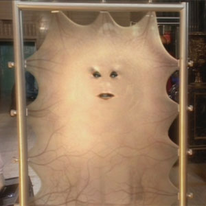

| Home The Doctors The Companions The Villains | |||||||
.jpg) |
|||||||
|
Lady CassandraLady Cassandra O'Brien is a fictional character from the long-running British science fiction television series Doctor Who. The character was voiced by Zoë Wanamaker, and was largely computer-generated, although a physical prop was also used on set. The Ninth Doctor first encountered Cassandra (Lady Cassandra O'Brien.Δ17) in the episode "The End of the World". They, along with the rich and powerful of the universe, were on Platform One, a space station orbiting Earth five billion years in the future, which was set up to witness the final destruction of the planet by the expansion of the Sun. According to Cassandra, her parents were the last to be buried "in its soil". She had been born on Earth and lived on the edge of the "Los Angeles Crevasse". Cassandra referred to herself as being "a boy" during this time. This could imply she was transgender; however, it may also be possible that the term "boy" in the contemporary vernacular may have lost its gender significance and come to mean simply "child". Married several times, her life had been extended through a series of 708 plastic surgery operations, until she was nothing but a piece of skin stretched onto a frame, with eyes and a mouth, connected to a brain in a designer jar filled with a preserving solution below. The skin had to be constantly moisturised to keep it from drying out. As the rest of the human race had long since either interbred with other intelligent species or altered themselves to the point even they don't call themselves human anymore (references are made to 'New Humans', 'Proto-humans' and 'Digi-humans'), Cassandra considered herself the last "pure" human, and all others as 'mongrels'. Rose Tyler, who was quickly turned off by her arrogance, characterised her as a "bitchy trampoline" and referred to her as "Michael Jackson". Cassandra used spider-like robots to sabotage Platform One's computer systems and the android Adherents of the Repeated Meme to direct attention away from herself. Her original intent was to create the appearance of a hostage situation and collect the ransom and insurance money to fund further surgical procedures. When that was exposed by the Doctor, she teleported off the station, leaving the others to die — both eliminating the evidence and allowing a hostile takeover of the guests' financial holdings. However the Doctor reset Platform One's systems, saving the station, and also reversed the teleportation feed, bringing Cassandra back. In the heat, and without her assistants to moisturise her, Cassandra's skin stretched and exploded, apparently killing her (although her brain was not seen to be destroyed). Cassandra returned in "New Earth", which took place 23 years after "The End of the World". Her brain had indeed survived. Her eyes had been retrieved and she was "repaired" with extra skin taken from the back of her previous body. She was in hiding in the basement of the hospital run by the Sisters of Plenitude, and tended to by a devoted forced-growth clone named Chip. When she discovered that Rose and the Tenth Doctor were on New Earth, she used a psychograft to transfer her consciousness over Rose's own, leaving her original brain to die. Her reasons for this were threefold—to gain revenge on Rose, to continue her life in a body of pure human stock, and to discover what the Sisters were hiding. Cassandra used Rose's body to give the Tenth Doctor a passionate kiss. Her impersonation of Rose was marred by her Sloane accent, poor imitation of rhyming slang, and anachronistic technical knowledge. In the end, however, it was her lack of compassion that gave her away. Her first instinct upon learning of the Sisters' "plague farm" was to attempt to blackmail them. She knocked out the Doctor using a noxious "perfume" she had hidden down her top. After letting "the flesh" free, "Rose", the Doctor and Chip escape to the basement where the Doctor forces Cassandra out of Rose's body but instead of floating as atoms in the air like the Doctor ordered her to, she invaded the Doctor's body and becomes a little too flirty with Rose. The diseased zombie-like humans break into the basement and Rose and "the Doctor" climb up a ladder. They get cornered at the top of it and Rose orders Cassandra to go back into her body so the Doctor can open the door. The Doctor orders Cassandra out of Rose's body and Cassandra goes back into his. She then goes into one of the diseased humans, an act which stuns her, as she is shocked at how lonely and isolated they feel. She then goes back into Rose, where she helps the Doctor cure the diseased. In the end, Cassandra transferred her consciousness into Chip, who allowed her in willingly. However, Chip's clone body began to fail, and Cassandra accepted that it was time for her to die. Before she did so, the Doctor took her back in time to see herself when she was beautiful and still had a body. In Chip's body, she told her past self that she was beautiful and collapsed, apparently dying at last in the younger Cassandra's arms. |
||||||